Blog
The practice's blog posts are not loaded in this preview. On the live site this page shows them, written into the page by another company's service for the practice's own account. A copy that is not the practice's does not load it. The practice's page is www.cypressranchvision.com/blog.html.
Cypress Ranch Vision Blog
Cypress Ranch Vision Blog is your trusted source for informative articles, expert insights, and valuable tips related to eye health and vision care. Explore a wealth of knowledge on topics ranging from eye conditions, vision correction options, to maintaining optimal eye wellness. Stay informed and prioritize your eye health with our engaging and educational blog content.
Vision Care
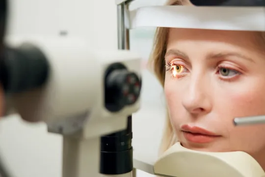
Comprehensive Eye Care
Pediatric Eye Care
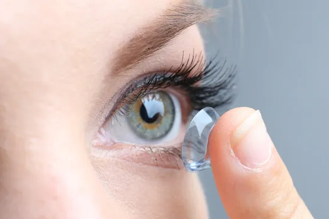
Contact Lens Exams
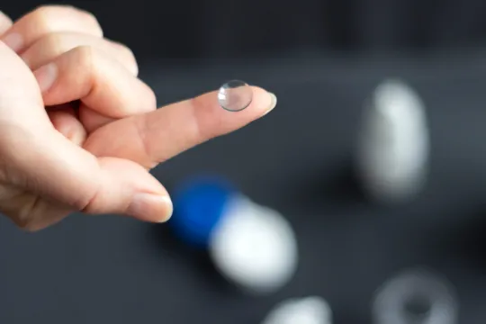
Ortho K
Myopia Management
Dry Eye Treatments
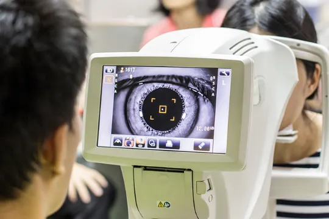
Glaucoma Testing
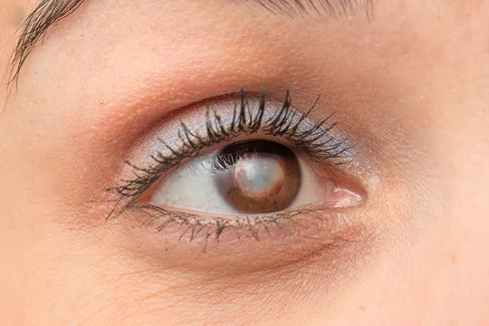
Cataracts
Eye Emergencies
Low Vision
Demodex
Pink Eye
Macular Degeneration
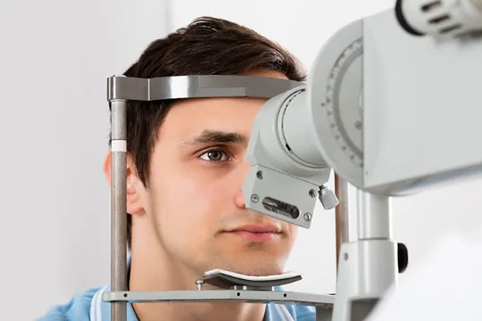
What to Expect During an Eye Exam
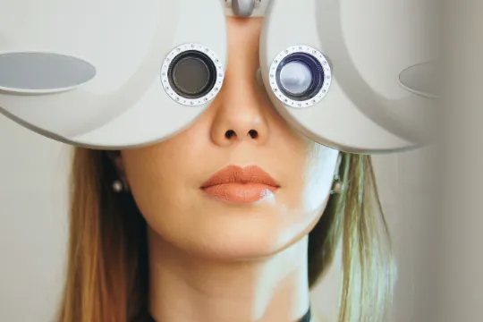
Refraction Test
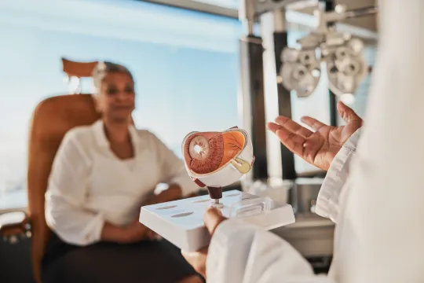
Senior Care
Neuro-Optometric Rehabilitation
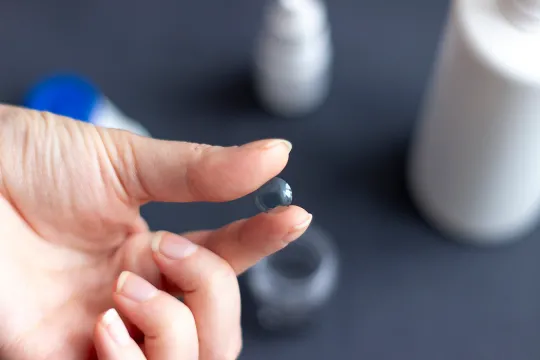
Corneal Refractive Therapy
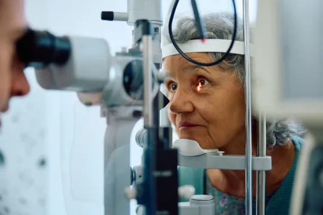
Medical Eye Exam
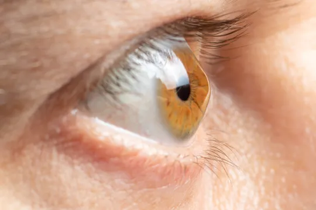
Astigmatism
Presbyopia
Amniotic Membranes
Urgent Eye Care
Glaucoma Treatment
Surgical Procedures
Implantable Contact Lenses
Benefits of LASIK
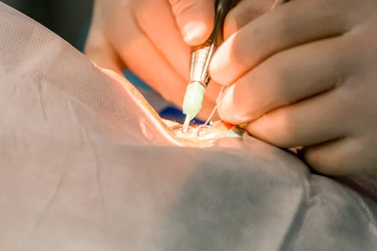
Limbal Relaxing Incisions
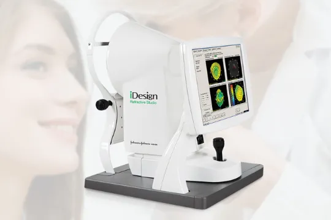
iDesign Custom Lasik
LASIK Procedure
Cosmetic Services
Understanding PRK
Which Patients are Good Candidates for Premium IOL
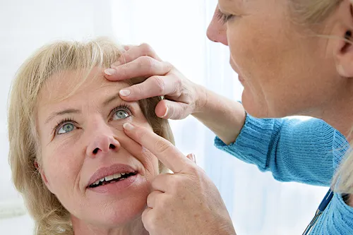
Can Diet Reverse Diabetic Retinopathy
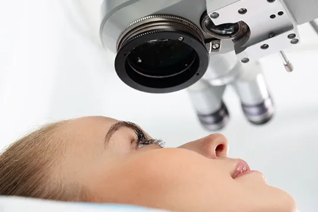
Eye Disease Treatment
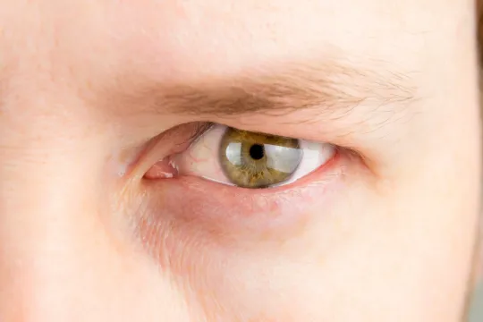
Why Should You Consider Eyelid Rejuvenation
LASIK Surgery
Overview of Visian ICL
Ocular Disease Management
Technology
TempSure Envi
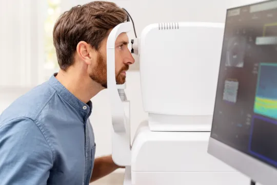
Optos
Dry Eye Advanced Diagnostic Testing
Newton (Formerly Neurolens)
Optical Coherence Tomography
Visual Field
Low Light Level Therapy
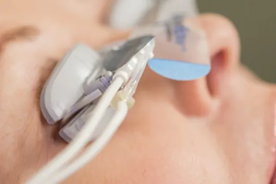
Lipiflow
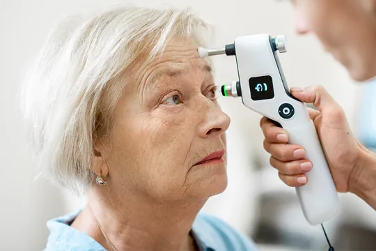
Tonometer
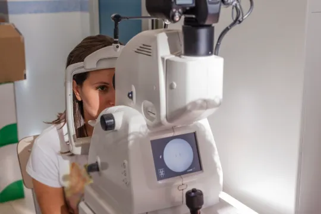
Retinal Imaging Testing
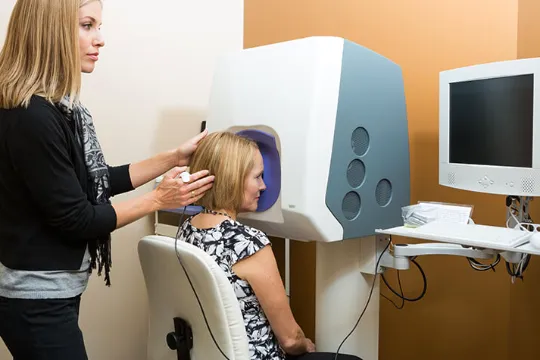
Optomap
TearCare: Understanding Dry Eye and Its Causes
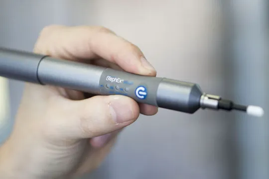
Blephex
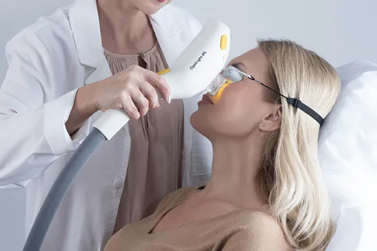
Intense Pulse Light Therapy
MiBo Thermoflo
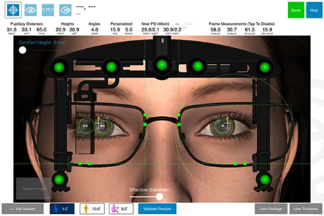
Optikam
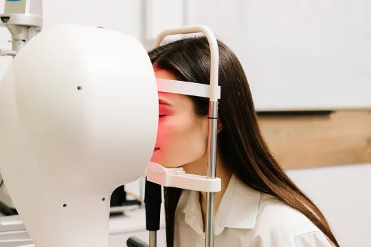
Medmont Topography